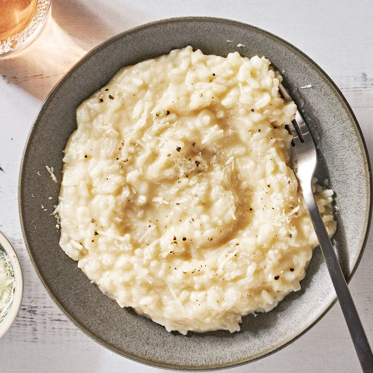

Risotto

Description
Risotto is an Italian dish made by cooking a starchy, short grain rice like arborio with stock until it becomes creamy. When you serve it on a plate, risotto should spread out into a silky, spoonable pool.
Ingredients
- 4 c. store-bought or homemade low-sodium chicken broth
- 5 tbsp. unsalted butter, divided
- 1 medium white onion, finely chopped (about 1 1/2 c.)
- 2 1/2 tsp. kosher salt, divided
- 1 1/2 c. arborio or carnaroli rice
- 1 c. dry white wine
- 3 oz. Parmesan, finely grated (about 1 1/2 c.)
- 3/4 tsp. freshly ground black pepper
Steps
- In a medium pot over medium-high heat, heat broth until steaming. Reduce heat to low, cover, and keep warm.
- Meanwhile, in a large skillet over medium heat, melt 4 tablespoons butter. Add onion and 1/2 teaspoon salt and cook, stirring occasionally, until softened, translucent, and sweet to the taste, 8 to 10 minutes. Add rice and cook, stirring occasionally, until translucent around the edges, 1 to 2 minutes more.
- Add wine and cook, stirring, until liquid is absorbed, 3 to 4 minutes. Add 3 cups warm broth, stir to incorporate, and bring to a simmer over medium-high heat. Reduce heat to medium-low, cover, and simmer until rice is just tender, 10 to 15 minutes.
- Uncover and add 1/2 cup warm broth. Return to a simmer over medium heat and continue to cook, stirring, until broth is absorbed, 1 to 2 minutes more. Taste and, if rice is still slightly al dente, add remaining 1/2 cup broth and continue to simmer, stirring, until absorbed and rice is tender.
- Remove from heat. Stir in Parmesan, pepper, and remaining 1 tablespoon butter until cheese and butter are melted; season with remaining 2 teaspoons salt, if needed. Serve immediately.